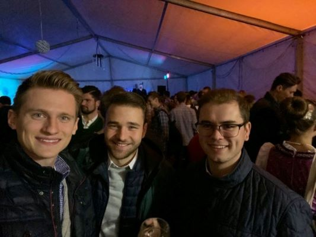

Szabadidőm ugyan nincsen túl sok de ha akad egy kevés nem csak inni szeretek. Anno meg mikor pécsen laktam több sportot is kipróbáltam. Úsztam, judoztam, fociztam valamint rengeteget bicikliztem. Mostanság sajnos ezek a dolgok elkoptak a szokásaim közül de a sport azóta is szerves része az életemnek. Rengeteget járok edzőterembe, otthon is szoktam edzeni és ha tudunk, van szabad pálya (ingyen) barátokkal eljárunk focizni vagy kosarazni.De a legszívesebben a barátaimmal találkozok és töltöm az időt. Nyáron rengeteget járunk le Orfűre ami itt van 20 km-re Pécstől és van egy mesterséges, fürdőzésre alkalmas tó. Szeretek étterembe járni, valamint mivel itt van nem messze Villány ezért a nyaranta megrendezésre kerülő borfesztiválokra is sűrűn lejárok. Nyilván ezeket nem lehet mindig csinálni. Ha esetleg otthon vagyok a World of Tanks nevű játékkal múlatom az időmet. Aki nem ismerné, ez egy tankos játék, értelemszerűen lőni kell benne egymást. Általában 15v15-s meccsek vannak amik max. 15 percig tartanak de ez játékmódtól függ. Könyv és újságok nem kenyereim de olykor olykor azok is a kezembe kerülnek. Leginkább újságok, hírportálok mint a Forbes.
